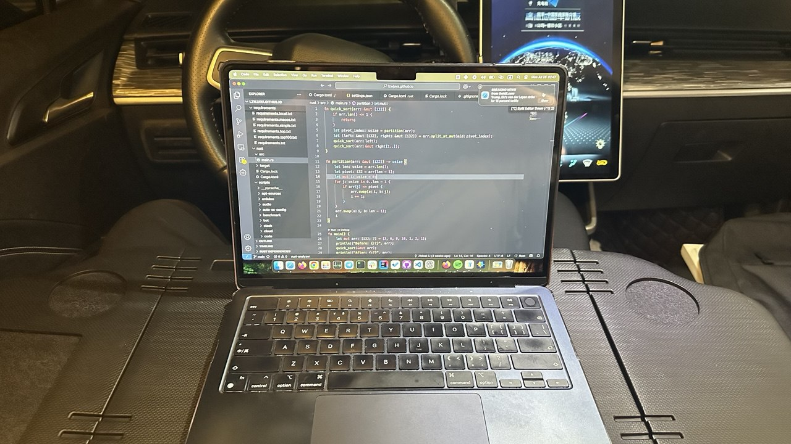
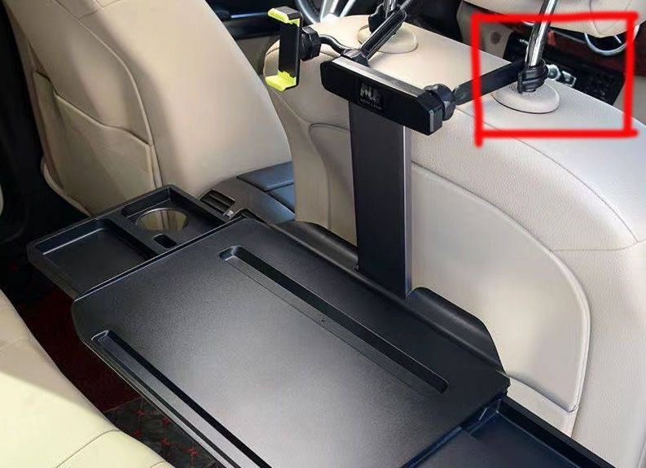

Arbeiten in einem Elektroauto | Original, von KI übersetzt
Kürzlich habe ich wieder in meinem EV gearbeitet. Zuvor hatte ich einen tragbaren Schreibtisch im Auto verwendet, aber es war immer noch unpraktisch. Ich musste ihn auf dem Rücksitz statt auf dem Hauptsitz verwenden.
Kürzlich habe ich einen anderen Typ eines großen, tragbaren, faltbaren Autotischs gekauft. Er war größer und ursprünglich für Tesla konzipiert, was ihn perfekt für Tesla-Fahrzeuge machte. Für andere Elektrofahrzeuge gibt es jedoch immer noch Möglichkeiten, ihn zu installieren, wie z. B. die Verwendung eines Päckchens Papier, um den leeren Raum auszufüllen und eine Seite des Tischs zu stützen.
In der Praxis stellte ich fest, dass ich vorne meine Beine statt des imaginären Papierpäckchens unterstützte. Außerdem passt mein Mobiltelefon perfekt auf den Tisch. Es gibt einen speziellen Schlitz, um das Mobiltelefon zu halten, ohne dass es verrutscht.
Mein Mobiltelefon ist ein iPhone 14 Pro Max mit einer Bildschirmgröße von 6,7 Zoll. Der Mobiltelefon-Schlitz ist genau die richtige Größe.
Was die elektrische Lampe betrifft, habe ich die Details in einem anderen Aufsatz geteilt.
Ich habe mein EV etwa im September 2022 gekauft, und die Laufleistung hat bis Juli 2025 etwa 56.000 km erreicht. Ich habe es intensiv genutzt.
Ich habe festgestellt, dass es im Leben viele Produkte gibt, deren volles Potenzial oder Funktionalität wir nicht nutzen. Sie haben viele Möglichkeiten. Wir müssen lernen, sie weise zu nutzen und den größten Nutzen daraus zu ziehen. Es geht nicht um das Geld; wir haben bereits etwas dafür ausgegeben. Das Wichtigste ist, zu lernen und nachzudenken.
Bei der Auswahl des Titels dieses Aufsatzes habe ich darüber nachgedacht, ob ich “EV” darin aufnehmen sollte. Ja, das sollte ich. In einem benzinbetriebenen Auto ist es aufgrund des lauten Motorgeräuschs und der Kraftstoffkosten nicht einfach, darin zu arbeiten. Ein EV ist jedoch perfekt zum Arbeiten im Auto.
Eine andere Sache, über die man nachdenken sollte, ist, wohin ich gehen soll. Welche schöne Szene möchte ich von meinem Auto aus betrachten? Welche guten Orte möchte ich besuchen? Menschen sind darin immer noch schlecht. Die Urbanisierung hat in den letzten Jahrzehnten in China stattgefunden. Die Menschen gehen am Wochenende zu Tourismusorten oder Einkaufszentren. Grundsätzlich gibt es auf der Erde Berge und Flüsse. Es gibt ein chinesisches Sprichwort, das so lautet: zwischen den Bergen reisen und mit dem Wasser spielen.
Ich habe eine DJI-Drohne, DJI Mini 2. Eine Möglichkeit, Orte zu finden, ist über die DJI-Community. Dort werden empfohlene DJI-Drehorte empfohlen. Eine andere Möglichkeit ist, sich an meine Erinnerungen zu erinnern, in Guangzhou, Changlong, einige Karneval, Beijing-Straße, Upside und Down Nine Road und Guangzhou Tower, Baiyun-Berg.
Ich denke, Reisen ist wie alles andere, man muss viel tun, und dann hat man mehr Orte oder Touristenattraktionen zu besuchen. Es ist Software oder Programmierung. Je mehr man weiß, desto mehr weiß man, dass man nicht weiß.
Der Liu Xi-Fluss in Guangzhou ist gut. Ich möchte sie an verschiedenen Orten ansprechen. Es ist wie ein Ozean. Man kann sie an verschiedenen Stränden mit unterschiedlichen Gefühlen sehen. Ich liebe Ozean und Strand sehr. Es ist wahrscheinlich, als ich aufwuchs, dass ich nicht so viel davon gesehen habe. Ich erinnere mich noch an das erste Mal, als ich den Strand sah, den Dameisha-Strand in Shenzhen.
Ich habe zwei faltbare Stühle in meinem Auto. Ich kann sie verwenden, aber sie sind für draußen, es gibt keine Klimaanlage. Also gehe ich wahrscheinlich in der Saison, in der ich keine Klimaanlage brauche, mehr raus, wie im Winter oder im frühen Frühling oder späten Herbst.
Ich bin sicher, dass ich auf diese Weise in der Zukunft lebe. Ich lebe seit etwa 15 Jahren in Guangzhou, Stand 2025. Aber es gibt immer noch viele Orte, die ich nicht besucht habe, besonders bei Bürogebäuden oder Wohnanlagen. Abgesehen von meinem Zuhause oder dem Büro meines Arbeitgebers, warum sollte ich ein anderes Bürogebäude besuchen?
Es ist verständlich, wenn ich Gründer eines Startups bin und andere Bürogebäude aufsuche, um mit Menschen über geschäftliche Dinge zu sprechen.
Ich mache das selten. Ich gehe manchmal nur zu Wohnanlagen, in denen meine Verwandten leben.
 Quelle: Selbstaufnahme
 Quelle: pinduoduo.com